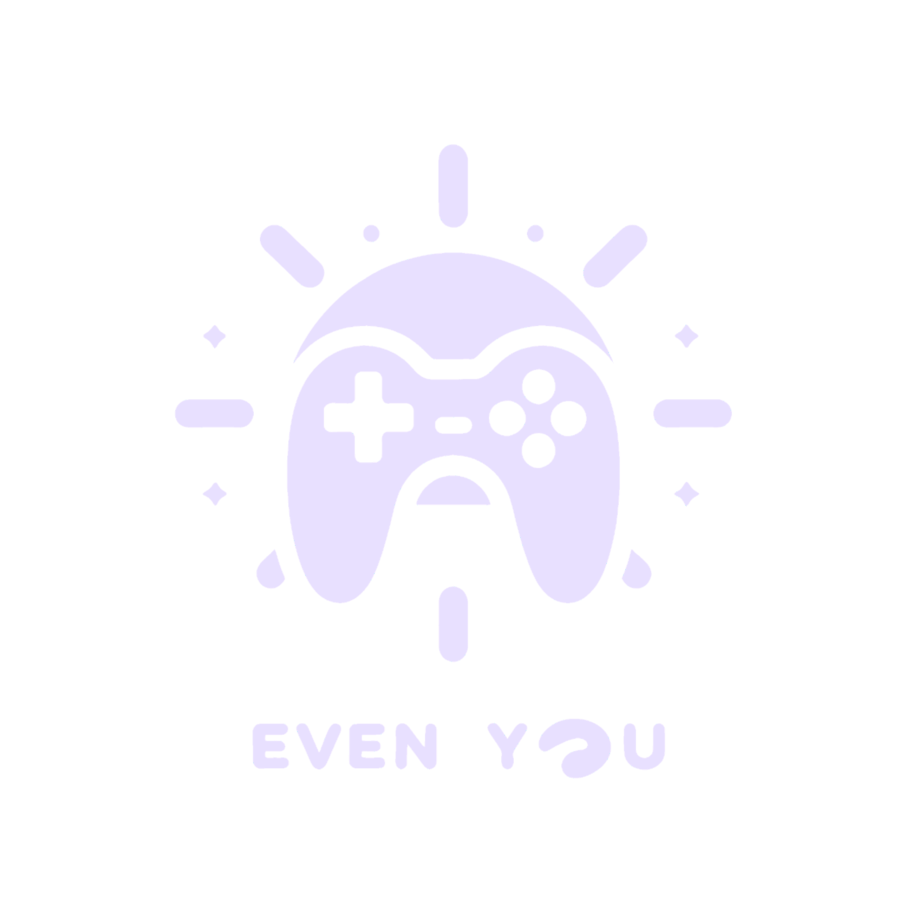

Studio & Capabilities
Capabilities
Development Timeline
Technology
Games
Different genres. Different ideas. Different ways to play.
Systems & Tools
Tools, interfaces, experiments, and software built beyond games.
Newsroom
Studio announcements, development notes, playtests, and project releases.
We're happy to hear from you — whether it's about collaboration, publishing, playtesting, feedback, or just saying hi.